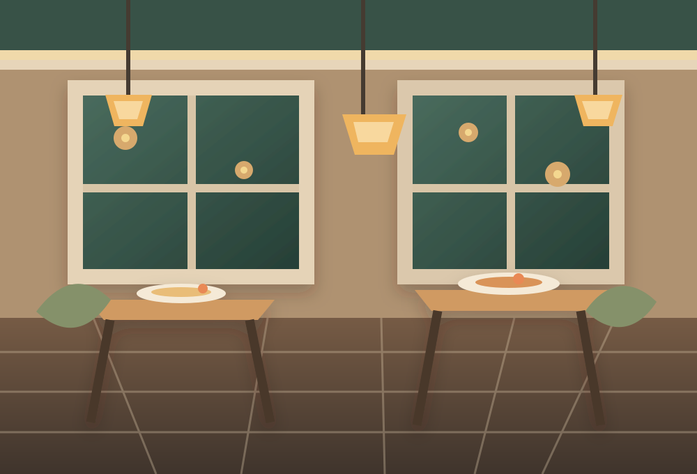

NO WORRIES
We’ll help you get back to the table.
Reset your password and your favorite local spots will be waiting where you left them.
Your account stays yours.

ACCOUNT RECOVERY
Forgot password?
Enter the email tied to your account. The local beta will show a reset code here.
Local beta code — keep it private and use it on the next page.Continue to reset password ↗
Remembered your password? Sign in
Production password recovery requires a configured email provider; this local beta does not send email.